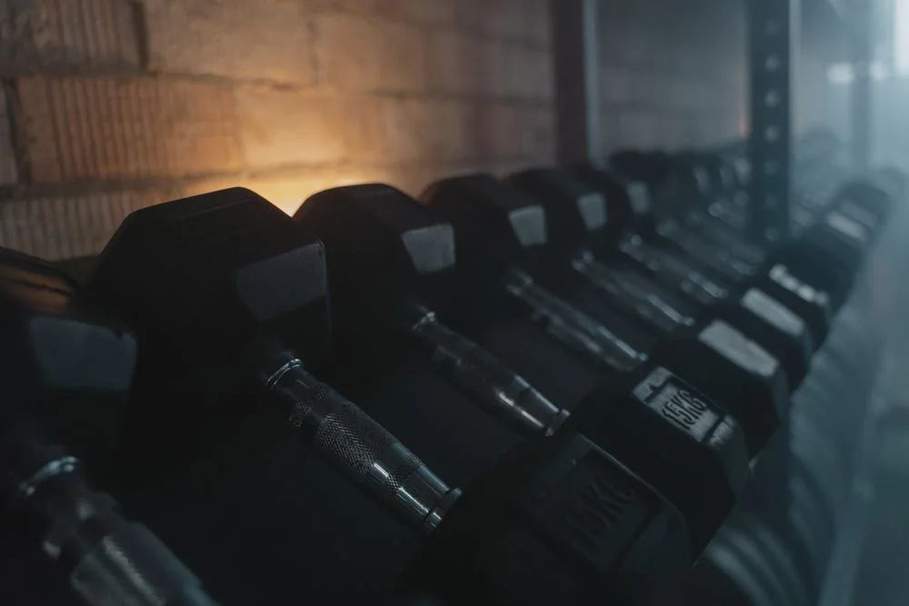
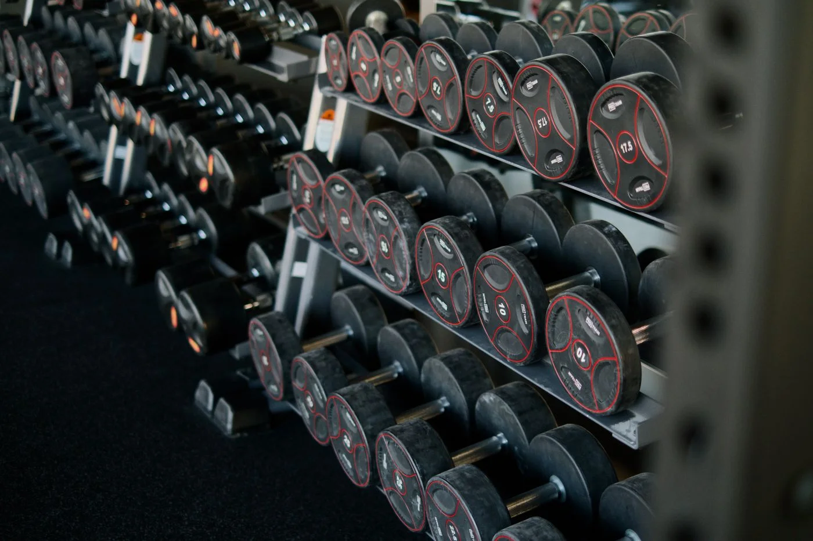
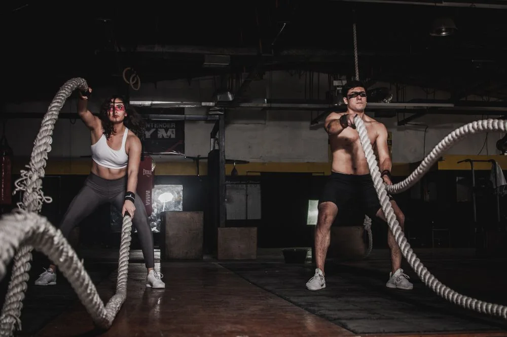
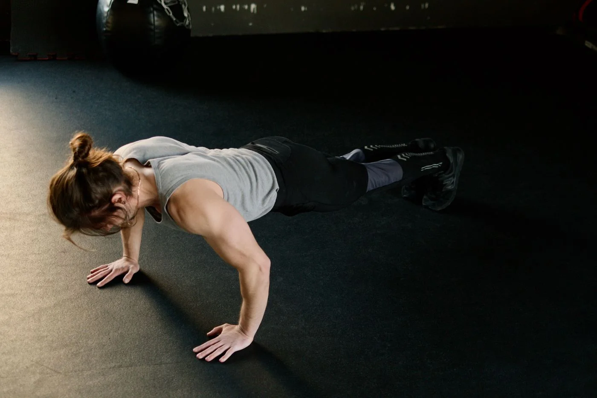
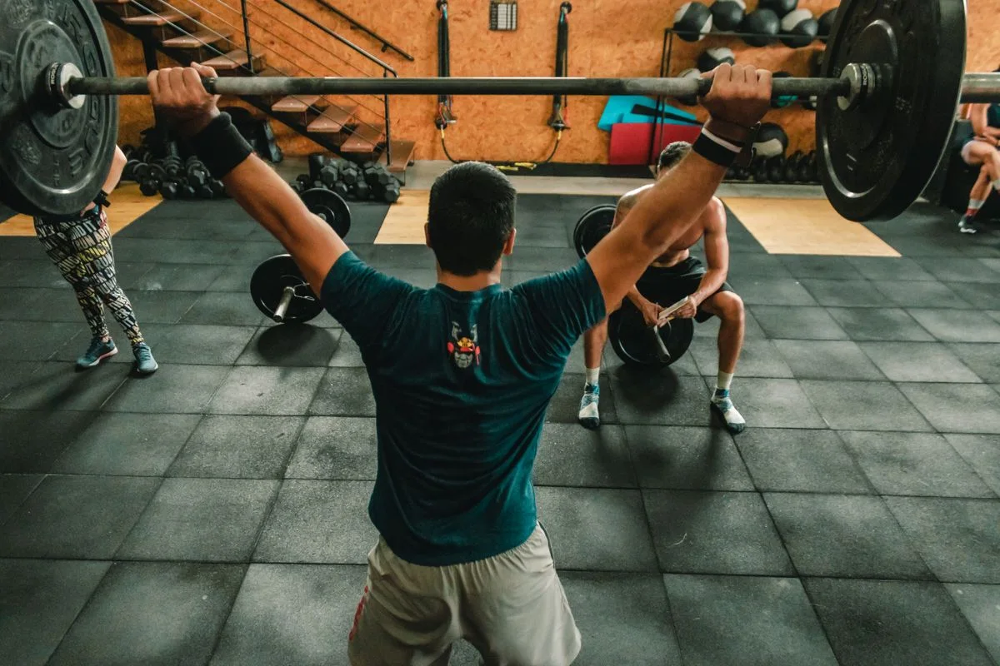
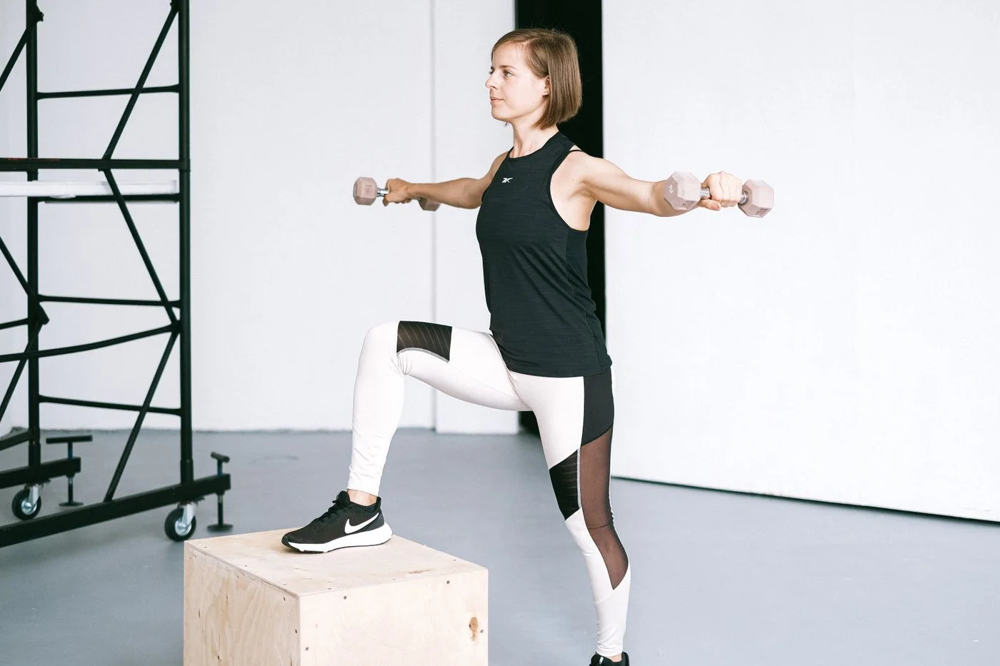
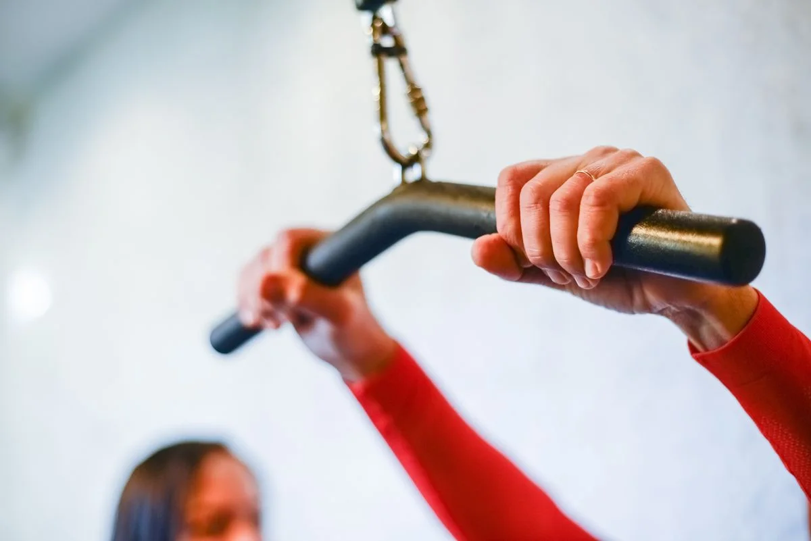
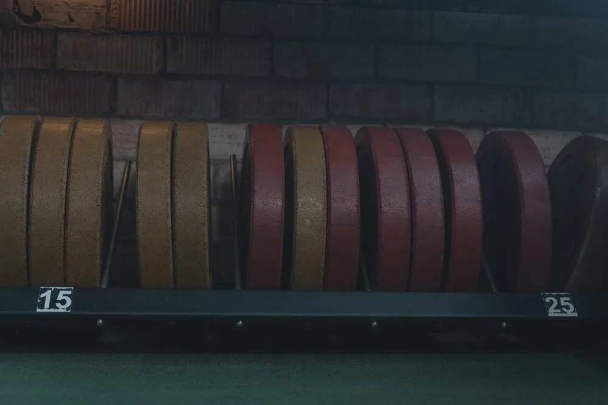
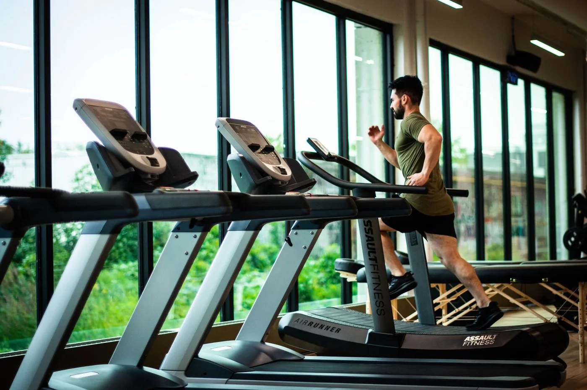

FUERZA.

El impulso de empezar.
La voluntad de superarte.
TU MOMENTO. TU RITMO.
Club Deportivo S'tilos · El Bosque, Cádiz.
Un club deportivo en El Bosque dedicado a la actividad física y al entrenamiento.
Hay muchas razones para empezar. Encuentra la tuya y haz del movimiento una parte de tu día.
No se trata de hacerlo todo hoy.
Se trata de encontrar tu ritmo
y seguir construyendo.

Una repetición más.
Un paso más cerca de ti.
Una mirada a la cultura del entrenamiento. Imágenes ilustrativas; no muestran las instalaciones ni el equipamiento de S'tilos.

El impulso de empezar.
La voluntad de superarte.

Activa el cuerpo.
Encuentra tu propio ritmo.

Pequeños pasos.
Una actitud que se construye.
Valores generales del entrenamiento, no programas del club. Fotografías ilustrativas.
El gesto. El enfoque. El movimiento.
Una mirada de cerca a lo que nos mueve.





Selección editorial de fotografías de archivo. Las personas, espacios y materiales no pertenecen a S'tilos ni representan sus actividades disponibles.
Club Deportivo S'tilos · El Bosque.
Contactar con S'tilos